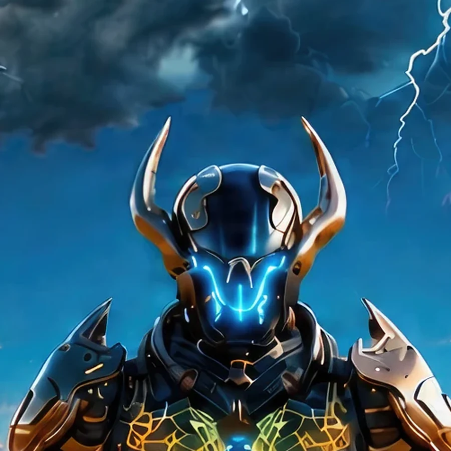
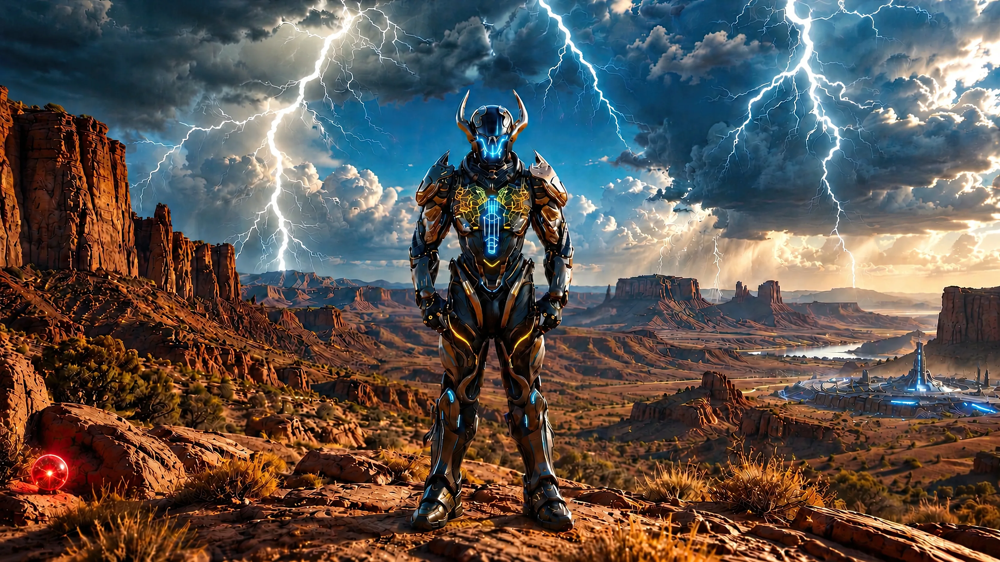
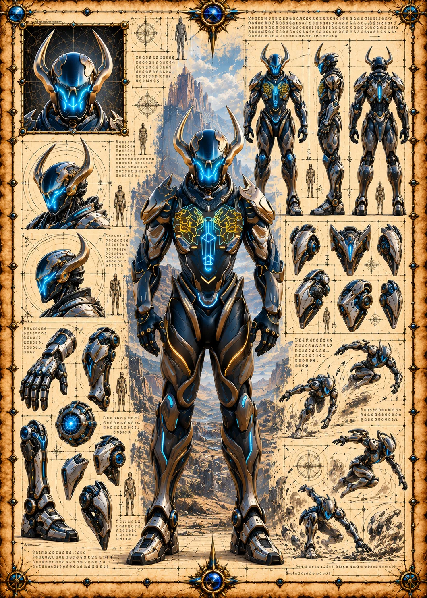

Field Observation
Vorzek discovers a small red signal orb near the lower-left ground. The hidden orb suggests covert alien monitoring on Earth 1.
 ©
©
GENEZYS ARCHIVE · EARTH 1 · Legionnaire
Veil Carver
Identity & combat record
Archive node 01 / 05

Archive record
Vorzek hunts the thin places of the north, where the fabric between worlds is weakest. The Plane Cut severs that fabric, piercing the center and striking the flanks. The Marauders say no rift goes unwatched while Vorzek is awake.
Combat signature
Severs dimensional fabric: Deals 50 pierce damage to the enemy in the middle and 40 damage to enemies on the edges.
Genezys 09:02 ™&©2026LEGIONS
Recovered visual record
Archive node 02 / 05

Full frame available // rotate device to landscape
Technical archive
Archive node 03 / 05

Classified field intelligence
Archive node 04 / 05
FIELD REPORT // ALIEN ORB DISCOVERY
Field Observation
Vorzek discovers a small red signal orb near the lower-left ground. The hidden orb suggests covert alien monitoring on Earth 1.
Environment
Object Analysis
Key Findings
Motion archive
Archive node 05 / 05
Motion record not yet recovered